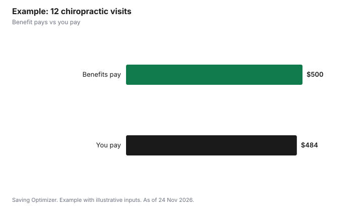

Healthcare · Canada
Chiropractic Costs in Canada: Coverage and Benefit Limits

A chiropractic visit costs about $82 after a $138 first visit, based on the BC Chiropractic Association's 2026 guideline. Provincial plans cover little: BC's MSP pays $23 a visit for up to 10 visits a year, only for people with premium assistance. Most people rely on workplace benefits, so check your yearly maximum before you book a series of visits.
Key takeaways
- BC guideline (2026): $138 first visit, $82 after, $112 extended (checked 24 Nov 2026).
- BC MSP: $23 a visit, 10 combined visits a year, premium assistance only.
- Work or car injuries: WorkSafeBC or car insurance may pay.
- Workplace benefits usually have a yearly dollar maximum.
- Unpaid fees can count toward the medical expense tax credit.
Coverage at a glance
| Payer | What it covers |
|---|---|
| Provincial plans | Little or nothing for most people; BC MSP $23 a visit with premium assistance |
| Workplace benefits | Per-visit or yearly maximums |
| Workers' compensation | Work-related injuries |
| Car insurance | Motor vehicle injuries |
| Tax credit | Unpaid fees may be eligible |
Questions to ask
- What's the treatment plan and how many visits?
- What does each visit cost?
- Do you bill my insurer directly?
- How much of my yearly maximum is left?
- Does my plan share one maximum across paramedical services?

Benefit maximums: an example
Example: 12 visits at $82 cost $984. With a $500 yearly maximum, you pay $484 yourself.
See paramedical benefit maximums and free physio in Ontario.
Sources
- BC Chiropractic Association, Chiropractic fees 2026 and Health coverage, checked 24 Nov 2026.
- Government of British Columbia, Supplementary benefits, checked 24 Nov 2026.
Frequently asked questions
How much does a chiropractor cost in Canada?
The BC guideline for 2026 is $138 for a first visit and $82 after; offices vary.
Does provincial health insurance cover chiropractic?
Rarely. BC's MSP pays $23 a visit for up to 10 visits a year for people with premium assistance.
Do I need a referral?
No referral is needed to see a chiropractor.
Does insurance cover chiropractic?
Many workplace plans do, up to a yearly maximum.
Can I claim chiropractic on my taxes?
Unpaid fees can be eligible medical expenses.
Researched and drafted with AI assistance and fact-checked against official Canadian sources. How we create content.
Note: Not medical advice. Amounts are examples. Education only.